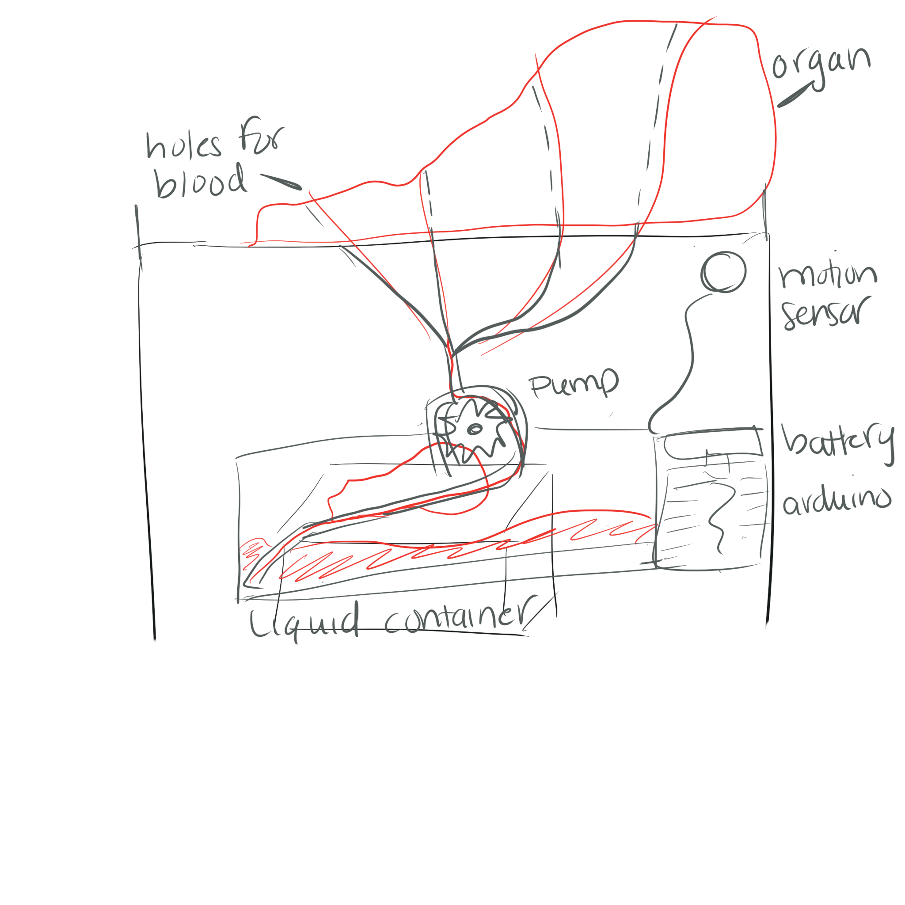
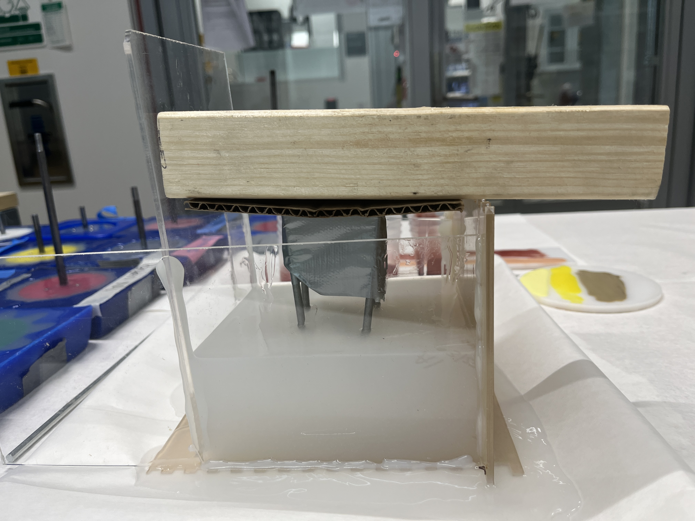
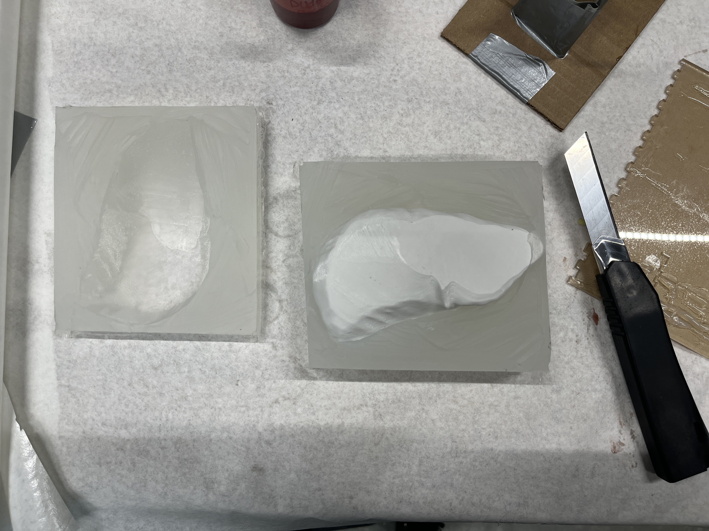
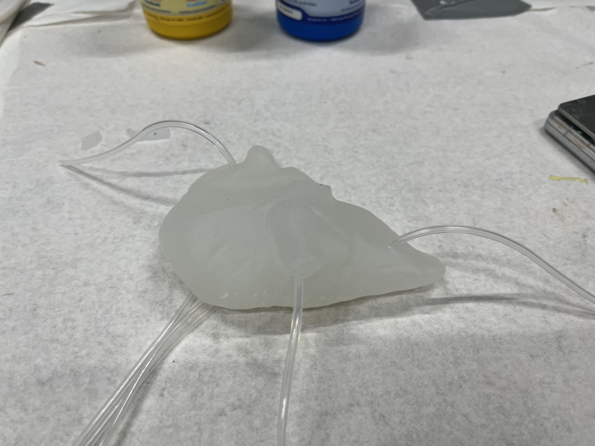
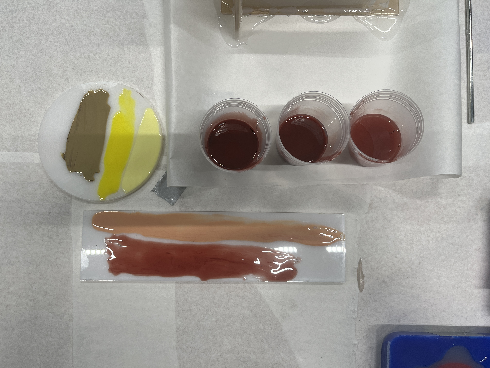
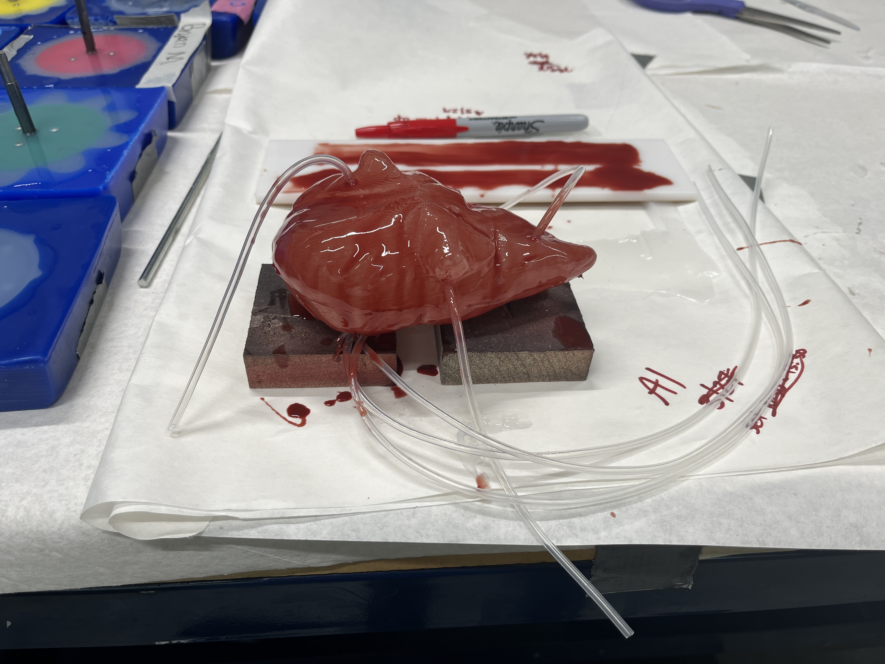
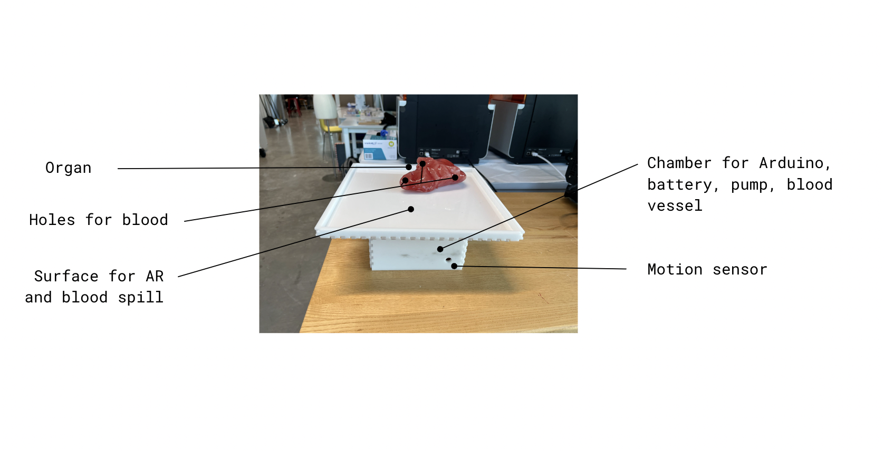
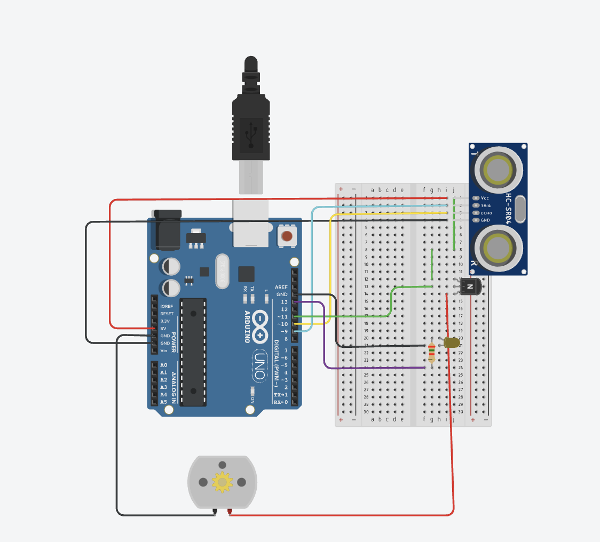
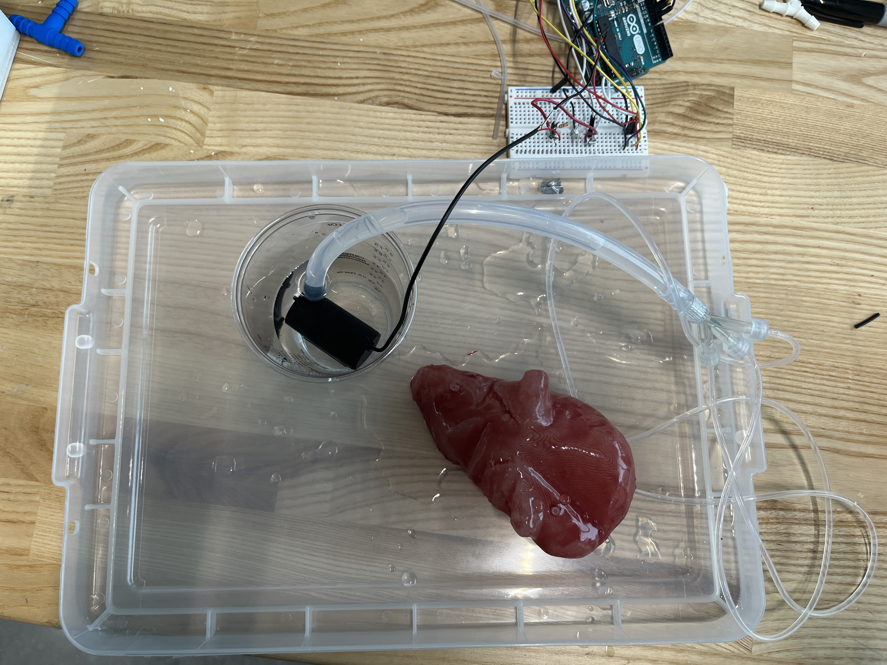

// defines pins numbers
const int trigPin = 9;
const int echoPin = 10;
const int motorPin = 11;
const int ledPin = 13;
// defines variables
long duration;
int distance;
void setup() {
pinMode(trigPin, OUTPUT); // Sets the trigPin as an Output
pinMode(echoPin, INPUT); // Sets the echoPin as an Input
pinMode(motorPin, OUTPUT);
pinMode(ledPin, OUTPUT);
Serial.begin(9600); // Starts the serial communication
}
void loop() {
// Clears the trigPin
digitalWrite(trigPin, LOW);
// Sets the trigPin on HIGH state for 10 micro seconds
digitalWrite(trigPin, HIGH);
digitalWrite(trigPin, LOW);
// Reads the echoPin, returns the sound wave travel time in microseconds
duration = pulseIn(echoPin, HIGH);
// Calculating the distance
distance = duration * 0.034 / 2;
// Control motor speed based on distance
if (distance <= 30) {
// 1 foot or closer
analogWrite(motorPin, 255); // 100% speed
digitalWrite(ledPin, HIGH);
} else if (distance <= 91) {
// Between 1 and 3 feet
analogWrite(motorPin, 255 * 0.75); // 75% speed
digitalWrite(ledPin, HIGH);
} else if (distance <= 121) {
// Between 3 and 4 feet
analogWrite(motorPin, 0); // 0% speed (off)
digitalWrite(ledPin, LOW);
} else {
// More than 4 feet away
analogWrite(motorPin, 0); // 0% speed (off)
digitalWrite(ledPin, LOW);
}
// Prints the distance on the Serial Monitor
Serial.print("Distance: ");
Serial.println(distance);
}
Project Background
Week 8 was about milling, molding, and casting. For another class, I am making an exhibit that includes realistic organs. I decided to get a head start and also potentially use this as a start to a new final project concept.
Molding and Casting Process
Materials
Electronic and related components
- ESP32-S2-DevKitc-1
- PIR motion sensor
- DC liquid pump
- Transistor
- Electrical wires
- Tubing
- T joint connectors
Molding and casting
- 3D print of a liver
- 4x ~4x6 inch acrylic pieces
- 1x ~5x7 inch acrylic piece
- Hot glue
- Heat gun
- Ecoflex 30 and 50
- Silicone dyes
- Tweezers
- Stirring stick Pump
- Mini submersible 5V pump
- Wiring
- Soldering station
- Breadboard
- Motion sensor HC-SR04
- Container for liquid
- Liquid (fake blood and water)
Goals
Create a life-like liver that gently drips blood when there is nearby movement. For example, when a person wants to look at the organ up close.
Electronics
I used the set up from last week's project and integrated it into this project.
Molding
I found a liver model on sketch fab.
I then 3D printed it to mold.

I created a chamber out of acrylic and sealed it with hot glue. I then mixed Ecoflex 50 and poured it into the chamber with the plan to drop the 3D model into the middle. I tried pouring the silicone on top of the model and realized, uh oh, it floats. With an 18 minute set time, this cardboard-tape-nail-wood combination proved to be an effective weight.
I used a heat gun to melt the glue sealant and cut the silicone cube toward the top of the model to make it less likely for the silicone poured in the center to leak out.
Next, it was time to lay the tubes that would serve as channels for the blood to flow. I pushed tweezers through the mold and opened them to pull the tubing through. The silicone easily reformed shape so this method was very helpful. I then sprayed it with Ease 200 so the silicone would not stick to the mold. Next, I poured Ecoflex 30, clamped the mold on each side, and let it set. This was the result.
Ooops, this organ is white! I tested several colors and potential accent pieces to mimic fat (yellow) and collected blood (red).
The middle color looked best so I applied it using a sponge brush.

Motion sensing
In the original design, there was an infared sensor. The design was changed to a sonic sensor to allow for more interactivity. As viewers got closer, the blood oozing increased. The following code and wiring helped to accomplish this.
Testing with water
The water test was effective but only after I primed the tubing with water. In the future, I would have less variation in the tubing sizes to make it easier for the liquid to flow.


CNC Process
I then used the ShopBot to CNC mill the name of my street. The file is a dfx from adobe illustrator using bauhaus font.

It turned out fairly well, but I would mill it on smoother wood next time to make the text clearer.